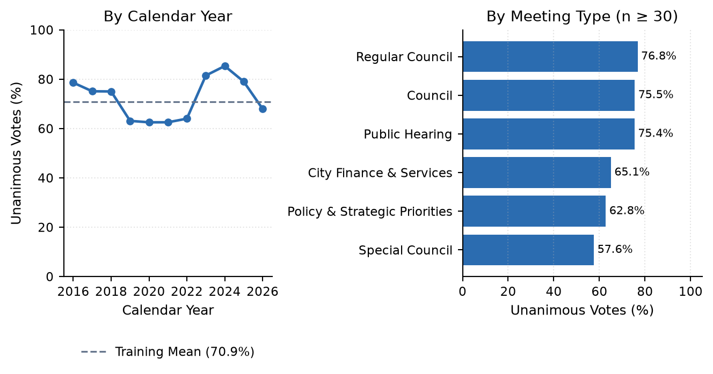

Predicting Unanimous Approval in Vancouver City Council Votes
Summary
This project investigates whether meeting type and year can predict whether a Vancouver City Council vote will be carried unanimously. Using publicly available council voting records from the City of Vancouver, we apply a binary classification approach to examine whether these two characteristics provide useful predictive information and evaluate our model against a simple majority-class baseline classifier. On the held-out test set, a balanced logistic regression model achieved an Area Under the Receiver Operating Characteristic Curve (ROC-AUC) of 0.650 and a balanced accuracy of 0.601, outperforming the majority-class dummy benchmark on the same test set (0.500 on both metrics) despite lower overall accuracy (0.573 versus 0.709). These findings show that council meeting forum and year carry modest predictive signal, though relying solely on institutional metadata without motion text limits predictive performance and reflects historical patterns rather than future forecasting.
Introduction
Vancouver City Council shapes local housing, budgeting, and transit policy through recorded council votes. Understanding when decisions pass unanimously versus when council members divide matters for civic transparency, as municipal councils often reach broad consensus on routine items while splitting on contested policy debates (Lucas, 2023). Examining how unanimity varies across meeting forums and over time helps clarify whether structural context alone signals which council decisions are likely to draw dissent.
Our research question is: Can meeting type and year predict whether a Vancouver City Council vote will be carried unanimously?
We use the Council Voting Records dataset from the City of Vancouver Open Data Portal (City of Vancouver, 2026). As of our November 18, 2026 analysis, the cleaned dataset contained 83,805 records from April 2016 to October 2026, representing 7,665 distinct council votes. Each row records an individual council member’s vote on a particular decision. For our analysis, we use one observation per council vote, with meeting type and year (extracted from the voting date) as predictors and the recorded decision as the basis for our target variable.
The outcome we want to predict is whether a council vote was carried unanimously. We define this as a binary variable: votes recorded as “Carried Unanimously” are assigned a value of 1, while votes recorded as “Carried” or “Lost” are assigned a value of 0. This allows us to treat the problem as a binary classification task.
The dataset contains the information needed to investigate this question, including the meeting type, voting date, and recorded decision for each vote.
Methods
Data Collection and Preparation
We obtained the Council Voting Records dataset from the City of Vancouver Open Data Portal through its public Application Programming Interface (API) and saved the original comma-separated values (CSV) file in data/raw/.
Following the team’s data-cleaning approach, we converted date columns to appropriate datetime formats, checked record identifiers, and removed redundant councillor-vote records when their voting statuses agreed. We retained conflicting records and flagged potential date inconsistencies, unusual voting decisions, and votes with fewer than 11 recorded councillors for further review. We then validated the cleaned data and saved it in Parquet format under data/processed/, along with a separate CSV containing flagged records.
These steps help reduce duplicate records while preserving potentially unusual observations rather than automatically excluding them from the analysis.
Downloading and Loading the Raw Data
from pathlib import Pathimport matplotlib.pyplot as pltimport pandas as pdimport requestsfrom sklearn.compose import make_column_transformerfrom sklearn.dummy import DummyClassifierfrom sklearn.linear_model import LogisticRegressionfrom sklearn.metrics import ( ConfusionMatrixDisplay, RocCurveDisplay, accuracy_score, balanced_accuracy_score, roc_auc_score,)from sklearn.model_selection import cross_validate, train_test_splitfrom sklearn.pipeline import make_pipelinefrom sklearn.preprocessing import OneHotEncoder# Download the original council voting records from Vancouver's Open Data API.url = ("https://opendata.vancouver.ca/api/explore/v2.1/""catalog/datasets/council-voting-records/exports/csv")raw_path = Path("../data/raw/council_voting_records.csv")raw_path.parent.mkdir(parents=True, exist_ok=True)response = requests.get(url, timeout=120)response.raise_for_status()raw_path.write_bytes(response.content)print(f"Raw data downloaded to {raw_path}")
Raw data downloaded to ..\data\raw\council_voting_records.csv
# Load the original council voting records for cleaning.df_raw = pd.read_csv("../data/raw/council_voting_records.csv", sep=";")print("Raw data shape:", df_raw.shape)
Raw data shape: (83824, 10)
Converting Dates and Handling Duplicates
# Prepare a copy of the raw data for cleaning.df_work = df_raw.copy()# Convert the voting dates and timestamps to datetime types.df_work["vote_date"] = pd.to_datetime( df_work["vote_date"], errors="raise")df_work["vote_start_date_time"] = pd.to_datetime( df_work["vote_start_date_time"], errors="raise", utc=True)print(df_work[["vote_date", "vote_start_date_time"]].dtypes)
# Check that each voting record has a unique identifier.assert df_work["vote_detail_id"].is_unique, ("Duplicate vote_detail_id values found.")print("Voting record identifiers are unique.")# Identify repeated records for the same councillor and council vote.status_counts = ( df_work.groupby(["vote_number", "council_member"])["vote"] .transform("nunique"))# Flag records where the same councillor has conflicting voting statuses.df_work["conflicting_vote_flag"] = status_counts >1# Remove redundant records only when voting statuses agree.redundant = (~df_work["conflicting_vote_flag"]& df_work.duplicated( subset=["vote_number", "council_member"], keep="first" ))print("Redundant records removed:", redundant.sum())df_work = df_work.loc[~redundant].copy()print("Shape after duplicate handling:", df_work.shape)
Voting record identifiers are unique.
Redundant records removed: 19
Shape after duplicate handling: (83805, 11)
Flagging Potential Data Quality Issues
# Convert UTC timestamps to Vancouver local dates.local_dates = ( df_work["vote_start_date_time"] .dt.tz_convert("America/Vancouver") .dt.date)# Flag records where the local timestamp date differs from the recorded vote date.df_work["date_mismatch_flag"] = ( local_dates != df_work["vote_date"].dt.date)print("Date mismatch records:", df_work["date_mismatch_flag"].sum())# Count voting statuses for each council vote.vote_counts = ( df_work.groupby(["vote_number", "vote"]) .size() .unstack(fill_value=0))# Ensure both voting categories are represented.vote_counts = vote_counts.reindex( columns=["In Favour", "In Opposition"], fill_value=0)# Get the recorded decision for each council vote.decisions = df_work.groupby("vote_number")["decision"].first()# Flag unanimous decisions with opposition votes.unanimous_conflict = ( (decisions =="Carried Unanimously")& (vote_counts["In Opposition"] >0))# Flag lost decisions with votes in favour but no opposition.lost_conflict = ( (decisions =="Lost")& (vote_counts["In Favour"] >0)& (vote_counts["In Opposition"] ==0))# Identify and flag potentially inconsistent decisions.suspicious_votes = decisions.index[ unanimous_conflict | lost_conflict]df_work["decision_anomaly_flag"] = ( df_work["vote_number"].isin(suspicious_votes))print("Potentially inconsistent council decisions:", len(suspicious_votes))# Count the number of distinct councillors recorded for each vote.unique_members = ( df_work.groupby("vote_number")["council_member"] .transform("nunique"))# Flag votes with fewer than 11 councillors recorded.df_work["low_coverage_flag"] = unique_members <11print("Votes with fewer than 11 members:", df_work.loc[df_work["low_coverage_flag"], "vote_number"].nunique())
Date mismatch records: 11
Potentially inconsistent council decisions: 11
Votes with fewer than 11 members: 231
Validating and Saving the Cleaned Data
# Verify that voting record identifiers remain unique.assert df_work["vote_detail_id"].is_unique, ("Duplicate vote detail IDs remain.")# Verify that date conversions produced no missing values.assert df_work["vote_date"].notna().all(), ("Missing or invalid vote dates found.")assert df_work["vote_start_date_time"].notna().all(), ("Missing or invalid timestamps found.")# Any remaining repeated councillor-vote records# must be associated with flagged conflicts.remaining_duplicates = df_work.duplicated( subset=["vote_number", "council_member"], keep=False)assert df_work.loc[ remaining_duplicates, "conflicting_vote_flag"].all(), ("Unexpected repeated councillor-vote records remain.")print("All cleaning validation checks passed.")# Identify records requiring further review.flag_columns = ["conflicting_vote_flag","date_mismatch_flag","decision_anomaly_flag","low_coverage_flag"]review_records = df_work.loc[ df_work[flag_columns].any(axis=1)].copy()# Save the cleaned dataset and records requiring review.processed_dir = Path("../data/processed")processed_dir.mkdir(parents=True, exist_ok=True)df_work.to_parquet( processed_dir /"council_voting_clean.parquet", index=False)review_records.to_csv( processed_dir /"votes_to_review.csv", index=False)print("Cleaned records saved:", len(df_work))print("Records flagged for review:", len(review_records))
All cleaning validation checks passed.
Cleaned records saved: 83805
Records flagged for review: 2163
Because the original dataset contains individual councillors’ voting records, we grouped the cleaned records by council vote to create one observation per decision. We retained the meeting type, voting date, and recorded decision, and extracted the calendar year from the voting date. We then defined a binary outcome: 1 for votes recorded as “Carried Unanimously” and 0 for votes recorded as “Carried” or “Lost”.
We also retained a flag identifying potentially inconsistent decisions. These observations were retained in the dataset rather than automatically excluded.
# Check that meeting type and date are consistent within each vote.consistency = ( df_clean.groupby("vote_number")[["meeting_type", "vote_date"]] .nunique(dropna=False))assert consistency.eq(1).all().all(), ("Inconsistent meeting types or dates found within a council vote.")# Construct one observation per council vote.df_votes = ( df_clean.groupby("vote_number", as_index=False) .agg( meeting_type=("meeting_type", "first"), vote_date=("vote_date", "first"), decision=("decision", "first"), decision_anomaly_flag=("decision_anomaly_flag", "any") ))# Extract the calendar year as a predictor.df_votes["year"] = df_votes["vote_date"].dt.year# Ensure all decisions belong to the expected categories.valid_decisions = {"Carried Unanimously", "Carried", "Lost"}assert df_votes["decision"].isin(valid_decisions).all(), ("Unexpected or missing decision categories found.")# Create the binary target variable.df_votes["is_unanimous"] = ( df_votes["decision"] =="Carried Unanimously").astype(int)# Save the vote-level dataset used for analysis.vote_level_path = Path("../data/processed/council_voting_vote_level.parquet")df_votes.to_parquet(vote_level_path, index=False)print("Vote-level dataset saved to:", vote_level_path)print("Vote-level dataset shape:", df_votes.shape)print("One row per vote:", df_votes["vote_number"].is_unique)
Vote-level dataset saved to: ..\data\processed\council_voting_vote_level.parquet
Vote-level dataset shape: (7665, 7)
One row per vote: True
Training and Test Split
We split the vote-level dataset into 80% training data and 20% test data. We used a stratified random split to preserve approximately the same proportion of unanimous and non-unanimous decisions in both sets. We set a fixed random seed for reproducibility. All exploratory analysis and model-development decisions used only the training set, leaving the test set aside for final evaluation.
This random split evaluates prediction on held-out votes from the historical period rather than forecasting voting outcomes in future years.
# Split at the council-vote level, not the individual-councillor level.train_votes, test_votes = train_test_split( df_votes, test_size=0.20, random_state=123, stratify=df_votes["is_unanimous"])# Verify the split.print("Training observations:", len(train_votes))print("Test observations:", len(test_votes))# Make sure no council vote appears in both sets.shared_votes =set(train_votes["vote_number"]) &set(test_votes["vote_number"])assertlen(shared_votes) ==0, "Train/test overlap detected."print("Shared council votes:", len(shared_votes))
Training observations: 6132
Test observations: 1533
Shared council votes: 0
Exploratory Data Analysis
We first examine the distribution of unanimous and non-unanimous decisions in the training data to understand the balance of our target variable.
# Summarize the binary target using training data only.target_counts = train_votes["is_unanimous"].value_counts()print("Training vote counts:")print(target_counts.rename(index={0: "Not unanimous", 1: "Unanimous"}))print("Proportion unanimous:",round(train_votes["is_unanimous"].mean(), 3))
Training vote counts:
is_unanimous
Unanimous 4348
Not unanimous 1784
Name: count, dtype: int64
Proportion unanimous: 0.709
# Summarize unanimity by meeting type using training data only.meeting_summary = ( train_votes.groupby("meeting_type", dropna=False)["is_unanimous"] .agg( number_of_votes="size", unanimous_rate="mean" ) .sort_values("number_of_votes", ascending=False))print("Unanimity by meeting type:")print(meeting_summary.round(3))
Unanimity by meeting type:
number_of_votes unanimous_rate
meeting_type
Council 1796 0.755
Policy & Strategic Priorities 1229 0.628
City Finance & Services 1108 0.651
Regular Council 1041 0.768
Public Hearing 732 0.754
Special Council 184 0.576
Auditor General Committee 27 1.000
Courts of Revision 15 1.000
In the training data, 70.9% of council votes were carried unanimously, indicating an imbalance between the two outcome classes. Unanimity rates also varied across meeting types. For example, Regular Council meetings had a higher unanimity rate (76.8%) than Policy & Strategic Priorities meetings (62.8%) and Special Council meetings (57.6%). Some meeting types had very few observations, so their rates should be interpreted cautiously. These descriptive differences suggest that meeting type may provide useful predictive information.
# Summarize unanimity by year using training data only.year_summary = ( train_votes.groupby("year")["is_unanimous"] .agg( number_of_votes="size", unanimous_rate="mean" ) .sort_index())print("Unanimity by year:")print(year_summary.round(3))
Unanimity rates also varied across years in the training data. Between 2019 and 2022, approximately 62.5%–64.0% of council votes were unanimous, compared with 81.5% in 2023 and 85.4% in 2024. The rate subsequently declined to 79.0% in 2025 and 68.0% in 2026, although the 2026 records cover only part of the year. These variations suggest that year may provide useful predictive information, but the descriptive results alone do not explain why voting patterns changed.
Training Data Visualization
To visualize these training-set patterns before modeling, Figure 1 plots unanimity rates across calendar years and across the most frequent meeting types (City of Vancouver, 2026).
fig, axes = plt.subplots(1, 2, figsize=(6.8, 3.5), gridspec_kw={"width_ratios": [1, 1.15]}, constrained_layout=True)# Left plot: unanimity rate by year (using year_summary from EDA)overall_rate = train_votes["is_unanimous"].mean() *100axes[0].plot( year_summary.index, year_summary["unanimous_rate"] *100, marker="o", markersize=4.5, linewidth=1.8, color="#2b6cb0")axes[0].axhline( overall_rate, linestyle="--", linewidth=1.2, color="#64748b", label=f"Training Mean ({overall_rate:.1f}%)")axes[0].set_title("By Calendar Year", fontsize=10.5)axes[0].set_xlabel("Calendar Year", fontsize=9.5)axes[0].set_ylabel("Unanimous Votes (%)", fontsize=9.5)axes[0].set_xticks([2016, 2018, 2020, 2022, 2024, 2026])axes[0].set_ylim(0, 100)axes[0].tick_params(labelsize=8.5)axes[0].grid(axis="y", linestyle=":", alpha=0.35)axes[0].spines["top"].set_visible(False)axes[0].spines["right"].set_visible(False)axes[0].legend(frameon=False, fontsize=8.5, loc="upper center", bbox_to_anchor=(0.5, -0.24))# Right plot: unanimity rate by meeting type (n >= 30)top_meetings = meeting_summary[meeting_summary["number_of_votes"] >=30].sort_values("unanimous_rate")bars = axes[1].barh(top_meetings.index, top_meetings["unanimous_rate"] *100, color="#2b6cb0")for bar in bars: val = bar.get_width() axes[1].text(val +1.5, bar.get_y() + bar.get_height() /2, f"{val:.1f}%", va="center", fontsize=8)axes[1].set_title("By Meeting Type (n ≥ 30)", fontsize=10.5)axes[1].set_xlabel("Unanimous Votes (%)", fontsize=9.5)axes[1].set_xlim(0, 105)axes[1].tick_params(labelsize=8.5)axes[1].grid(axis="x", linestyle=":", alpha=0.35)axes[1].spines["top"].set_visible(False)axes[1].spines["right"].set_visible(False)plt.show()

Figure 1. Unanimity rate by calendar year (left) and by meeting type for meeting types with at least 30 votes (right) in the training set.
As shown in Figure 1, unanimity rose sharply above the 70.9% training mean in 2023 and 2024 after remaining near 63% from 2019 to 2022, while Regular Council meetings consistently recorded higher unanimity than Special Council or Policy and Strategic Priorities meetings.
Model Selection, Metric Justification, and Classification Analysis
To predict whether a council vote was carried unanimously, we compared a majority-class dummy classifier baseline against logistic regression with default and balanced class weights. Logistic regression fits our binary outcome (unanimous versus non-unanimous) and estimates interpretable probabilities for each category, building on supervised learning approaches applied to legislative roll-call data (Bonica, 2018). Because unanimity in the training data varied non-linearly across years (62.5%–64.0% in 2019–2022 versus 85.4% in 2024) and meeting types (76.8% in Regular Council versus 57.6% in Special Council), we one-hot encoded both predictors inside a pipeline so preprocessing stayed within each five-fold cross-validation split.
We evaluated models primarily using Area Under the Receiver Operating Characteristic Curve (ROC-AUC) and balanced accuracy, alongside overall accuracy for baseline comparison. Because 70.9% of training votes were unanimous, a dummy classifier achieved roughly 70.9% accuracy while missing all non-unanimous votes. ROC-AUC evaluates class separation across all thresholds, and balanced accuracy weights both classes equally so ignoring non-unanimous votes scores 50.0%.
# Separate features and target for training and test setsfeatures = ["meeting_type", "year"]target ="is_unanimous"X_train, y_train = train_votes[features], train_votes[target]X_test, y_test = test_votes[features], test_votes[target]# One-hot encode both categorical predictorspreprocessor = make_column_transformer( (OneHotEncoder(handle_unknown="ignore"), features))# Define models to compare with five-fold cross-validationmodels = {"Dummy (Most Frequent)": DummyClassifier(strategy="most_frequent"),"Logistic Regression": make_pipeline( preprocessor, LogisticRegression(max_iter=1000, random_state=123) ),"Logistic Regression (Balanced)": make_pipeline( preprocessor, LogisticRegression(max_iter=1000, class_weight="balanced", random_state=123) ),}scoring = ["accuracy", "balanced_accuracy", "roc_auc"]cv_rows = []for name, model in models.items(): scores = cross_validate(model, X_train, y_train, cv=5, scoring=scoring) cv_rows.append({"Model": name,"CV Accuracy": scores["test_accuracy"].mean(),"CV Balanced Accuracy": scores["test_balanced_accuracy"].mean(),"CV ROC-AUC": scores["test_roc_auc"].mean(), })cv_results = pd.DataFrame(cv_rows).round(3)
Results
Cross-Validation and Test Performance Summary
cv_results
Model
CV Accuracy
CV Balanced Accuracy
CV ROC-AUC
0
Dummy (Most Frequent)
0.709
0.500
0.500
1
Logistic Regression
0.707
0.500
0.636
2
Logistic Regression (Balanced)
0.579
0.598
0.637
Table 1. Five-fold cross-validation performance on the training set.
In five-fold cross-validation (Table 1), the majority-class dummy baseline achieved an accuracy of 0.709, a balanced accuracy of 0.500, and a ROC-AUC of 0.500. Both logistic regression models improved ROC-AUC to 0.636–0.637, showing that meeting type and year contain predictive signal. However, the unweighted logistic regression model achieved a balanced accuracy of only 0.500 because it rarely predicted the minority non-unanimous class. Using balanced class weights increased cross-validation balanced accuracy to 0.598 (with an accuracy of 0.579 and ROC-AUC of 0.637), so we selected the balanced logistic regression model for final evaluation.
# Fit the selected model and dummy benchmark on the full training set, then evaluate once on X_testdummy_model = models["Dummy (Most Frequent)"]dummy_model.fit(X_train, y_train)dummy_pred = dummy_model.predict(X_test)dummy_prob = dummy_model.predict_proba(X_test)[:, 1]best_model = models["Logistic Regression (Balanced)"]best_model.fit(X_train, y_train)y_pred = best_model.predict(X_test)y_prob = best_model.predict_proba(X_test)[:, 1]test_summary = pd.DataFrame([ {"Model": "Dummy (Most Frequent)","Test Accuracy": accuracy_score(y_test, dummy_pred),"Test Balanced Accuracy": balanced_accuracy_score(y_test, dummy_pred),"Test ROC-AUC": roc_auc_score(y_test, dummy_prob), }, {"Model": "Logistic Regression (Balanced)","Test Accuracy": accuracy_score(y_test, y_pred),"Test Balanced Accuracy": balanced_accuracy_score(y_test, y_pred),"Test ROC-AUC": roc_auc_score(y_test, y_prob), },]).round(3)test_summary
Model
Test Accuracy
Test Balanced Accuracy
Test ROC-AUC
0
Dummy (Most Frequent)
0.709
0.500
0.50
1
Logistic Regression (Balanced)
0.573
0.601
0.65
Table 2. Held-out test-set performance for the majority-class dummy benchmark and the selected balanced logistic regression model.
Figure 2. Receiver operating characteristic curve (left) and confusion matrix (right) for the balanced logistic regression model on the test set.
On the held-out test set (Table 2 and Figure 2), the balanced logistic regression model achieved an accuracy of 0.573, a balanced accuracy of 0.601, and a ROC-AUC of 0.650. Overall accuracy is lower than the test-set dummy benchmark (0.709, Table 2) because balanced class weights trade majority-class accuracy for substantially higher recall on non-unanimous votes, raising balanced accuracy from 0.500 to 0.601 on the same test set. As shown in the confusion matrix (Figure 2, right), the model correctly identified 582 unanimous votes and 297 non-unanimous votes, while misclassifying 505 unanimous votes as non-unanimous and 149 non-unanimous votes as unanimous.
Feature Effects and Top Coefficients
# Extract the largest positive and negative log-odds coefficientsohe = best_model.named_steps["columntransformer"].named_transformers_["onehotencoder"]raw_names = ohe.get_feature_names_out(features)clean_names = [ name.replace("meeting_type_", "Meeting Type: ").replace("year_", "Year: ")for name in raw_names]coefficients = best_model.named_steps["logisticregression"].coef_[0]coef_summary = ( pd.DataFrame({"Feature": clean_names, "Coefficient": coefficients}) .sort_values("Coefficient", ascending=False))top_coefs = pd.concat([coef_summary.head(5), coef_summary.tail(5)]).round(3)top_coefs
Feature
Coefficient
0
Meeting Type: Auditor General Committee
1.839
3
Meeting Type: Courts of Revision
1.163
16
Year: 2024
0.837
15
Year: 2023
0.467
17
Year: 2025
0.379
12
Year: 2020
-0.449
13
Year: 2021
-0.472
1
Meeting Type: City Finance & Services
-0.653
4
Meeting Type: Policy & Strategic Priorities
-0.726
7
Meeting Type: Special Council
-0.894
Table 3. Largest positive and negative log-odds coefficients from the balanced logistic regression model.
Table 3 highlights the strongest predictors of unanimity in the fitted model. Votes in 2024 (coefficient 0.837), 2023 (0.467), and 2025 (0.379), as well as Auditor General Committee (1.839) and Courts of Revision (1.163) meetings, were positively associated with unanimous approval. Conversely, Special Council (-0.894), Policy and Strategic Priorities (-0.726), and City Finance and Services (-0.653) meetings, along with votes in 2020 (-0.449) and 2021 (-0.472), had negative coefficients, indicating lower odds of unanimity.
Discussion
Overall, meeting type and calendar year provide modest but meaningful predictive signal for whether a Vancouver City Council vote is carried unanimously. Achieving a test ROC-AUC of 0.650 and a balanced accuracy of 0.601—well above the 0.500 test-set dummy benchmark (Table 2; Figure 2)—demonstrates that institutional metadata helps distinguish unanimous from contested votes, even though balanced weighting reduces raw test accuracy from 0.709 to 0.573.
Different council forums serve distinct roles in municipal governance: Regular Council, Auditor General Committee, and Courts of Revision meetings often handle routine or administrative items, aligning with their higher unanimity rates (Figure 1; Table 3). By contrast, Special Council, Policy and Strategic Priorities, and City Finance and Services meetings center on contested policy and budget debates, yielding negative coefficients (Table 3). This pattern aligns with Canadian municipal governance research showing that local councils often exhibit broad consensus on routine matters while still dividing along ideological lines on contentious policy issues (Lucas, 2023; Lucas & Armstrong, 2021). Similarly, higher unanimity in 2023–2024 compared with 2020–2021 (Figure 1; Table 3) likely reflects shifts in council composition after the 2022 municipal election.
These results match our expectations. Because meeting type and year capture institutional context rather than the substance of each motion, we anticipated moderate class separation (0.650 ROC-AUC) rather than high predictive accuracy.
Key limitations include relying on only two predictors without motion topic or sponsor data, using a random 80/20 split that evaluates historical interpolation rather than future forecasting (with 2026 covering only part of the year), and retaining flagged anomalous or low-coverage records that may add label noise. Additionally, one-hot encoding without interaction terms assumes meeting type and year act additively.
For civic researchers and transparency advocates, this baseline quantifies how unanimity varies across council forums and years. However, the misclassifications shown in the confusion matrix (Figure 2) underscore that metadata-only models should inform exploratory analysis rather than any automated decision-making.
Future work could incorporate motion titles using natural language processing, test temporal generalization across council terms, or model individual councillor voting histories and ideological alignment to study coalition and dissent patterns (Bonica, 2018; Lucas & Armstrong, 2021).
Lucas, J., & Armstrong, D. A., II. (2021). Policy ideology and local ideological representation in Canada. Canadian Journal of Political Science, 54(4). https://doi.org/10.1017/S0008423921000652
Bonica, A. (2018). Inferring roll-call scores from campaign contributions using supervised machine learning. American Journal of Political Science, 62(4), 830–848. https://doi.org/10.1111/ajps.12376